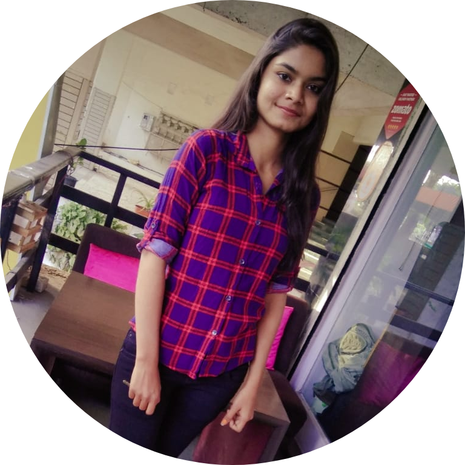

|  |
Prajakta Satikosare.
Student at Priyadarshini J.L College of Engineering. |
Currently, I am as an Intern at Varcus Technologygy.
LinkedIn Profile
Objective.
To make optimum utilization of my knowledge and skills, utilize opportunities
effectively for professional growth and to contribute int the best possible way
for the betterment of the organization and self.
Academic Qualification.
- Bachelor of Enginering
IV year in Priyadarshini J.L college of Engineering,Nagpur.
year: 2020.
- H.S.C
Siddeshswar Jr. College,Nagpur.
Score: 65%
year : 2017.
- S.S.C
Adarsh Sanskar Vidhyalaya,Nagpur.
Score: 81%
year : 2015.
Skills.
Extra Curricular Activities.
- Adobe Graphics Designing Workshop
Held at Priyadarshini J.L college of Engineering Nagour.
Dated on 2-jan-2019.
- Workshop on Hardware, OS, Networking, Server, Ethical Hacking, AWS, IOT etc
Conducted at Jerking Nagpur,Mahal Centre,Maharashtra.
Dated on 13-feb-2019 to 20-feb-2019.
- Participated in BLIND CODING
Event of "AVISH-2019", a National Technical Festival organized by
Computer Science and Engineering Department of Priyadarshini Institiute
of Engineering and Technology, dated on 21 and 22 Feb,2019
Hobbies and Interests.
- Dancing.
- Reading.
- Exploring ancient and religious places.
- Watching movies.
Personal Information.
| Address : |
Mahatma Gandhi Nagar 284,Nagpur |
| D.O.B : |
22-06-1999 |
| Gender : |
Female. |
| Languages Known : |
Hindi,English,Marathi |
To Connect with me :